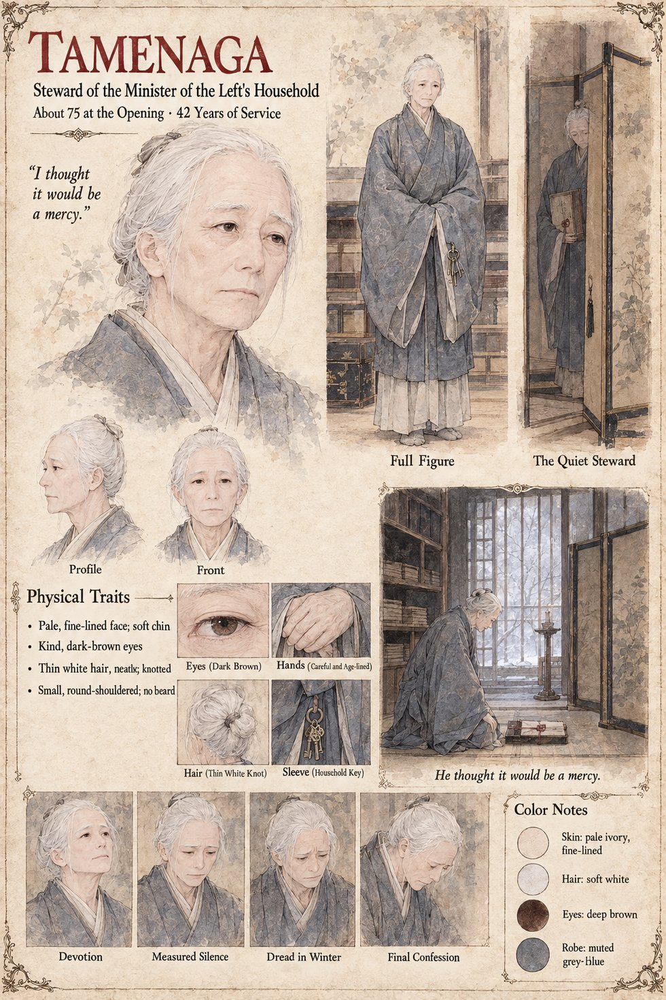

Tamenaga
Steward of the household of the Minister of the Left · forty-two years in Arikuni's service at the opening · about 75 by his sheet, 80 at his death
The gentle, devoted steward of the Minister of the Left's household, who has come in every night for forty-two years to ask whether the lamp may be lit, and who stands a little inside the screen with the stillness of a man who has made a long career of wishing to be furniture. On the night of the pyre he hears Arikuni say, to an open window, The Law will want a hand. He has spent four decades reading his master's wishes from the angle of a shoulder, and he hears an instruction. It is the only sentence of that week that he will repeat, and he repeats it once.
The Examiner's report on the boy's death comes to him. He reads its eleven sheets twice and understands them perfectly, which is the trouble: he understands also what his master will do with the word cat and what it will do to him, the old man told that his grandson has died of the animal that sits on his knee, and the cat, the next morning, no longer in the house. He lays the report in a cabinet, writes on its cover Examiner's conjecture, not pressed; held at the Minister's pleasure, and binds it with the small seal of the household that no Examiner of the Bureau has ever been known to break. Then, because a hand without a reason is a gesture and a Minister's grandson cannot be buried on a gesture, he sits for two nights with the cabinet's key in his sleeve, and on the third goes out to find Sōroku, who is paid twelve bolts of silk to remember a weir. He does not think of himself as a liar; he arranges the story into its proper order. When Yasutsugu crosses the avenue to ask after his own report, Tamenaga, who looks as though he has not slept, tells him with great gentleness that the matter is closed.
He dies in the fifth winter, eighty years old and forty-seven years in the household, and asks for the Minister to be sent for. He says that he has been unkind, once, in the course of a kindness. He tells him, twice, of the paper in the Bureau's lower archive, three shelves from the floor, with not pressed on its cover; of the man paid twelve bolts of silk; of what the Minister himself said in the study on the night of the pyre, which Arikuni cannot recall having said, the worst thing in the room. Then, with a look of perfect and appalling gentleness, he says that he thought it would be a mercy, and dies. The manuscript gives his service, his age at death, the cabinet, the cover and the cord, and gives his last words as reported speech; the line on the sheet puts them in his mouth. The sheet's 75 at the opening, pale fine-lined face, kind dark-brown eyes, thin white hair in a neat knot, small round-shouldered build, muted grey-blue robe and the ring of household keys at his sleeve are its own.
“I thought it would be a mercy.”
Appears In

Related Subjects


Related Records

On the night of the pyre Sugino no Arikuni warms the cold cushion against his chest beneath his robe before setting it down for Azuki, who has refused her dinner for three days; the steward Tamenaga waits inside the screen to ask whether the lamp may be lit.